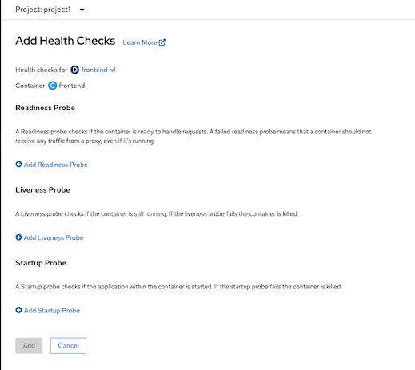

Pod Health Check
Prerequisite
Deploy frontend app (if you still not deploy it yet)
oc apply -f manifests/frontend.yaml -n project1
oc delete deployment frontend-v2 -n project1
Readiness, Livenss and Startup Probe
Kubernetes provide 3 types of probe to check pod's health
- Readiness, check that pod is ready for process request or not. If success, service will allow traffic to this pod.
- Liveness, check that pod is dead or alive. Pod will be restarted if liveness probe is failed.
- Startup, for dealing with long startup time pod. Set probe with same as liveness with a duration to failureThreshold * periodSecond. Liveness probe will takeover Startup probe after startup is success.
Frontend application provides health check with following URI
| URI | Description |
|---|---|
| /health/live | Livenness probe URL |
| /health/ready | Readiness probe URL |
For demo purpose we can set readiness and liveness by following URI
| URI | Description |
|---|---|
| /stop | Set liveness to false |
| /start | Set liveness to true |
| /not_ready | Set readiness to false |
| /ready | Set readiness to true |
- Test frontend app readiness
- Connect to pod
POD=$(oc get pods --no-headers -n project1 | grep frontend |head -n 1| awk '{print $1}') oc -n project1 rsh $POD - Test frontend app
curl http://localhost:8080/ - Test readiness probe
curl http://localhost:8080/health/ready - Set pod to not ready state
curl http://localhost:8080/not_ready - Test frontend readiness probe and test app again. You will get 503 Service Unavailable response code.
curl -v http://localhost:8080/health/ready curl -v http://localhost:8080/ - Set pod to ready state
curl http://localhost:8080/readyConfigure and Test Probes
Command Line
- Connect to pod
Test frontend app liveness
- Connect to pod
POD=$(oc get pods --no-headers -n project1 | grep frontend |head -n 1| awk '{print $1}') oc -n project1 rsh $POD - Test frontend app
curl http://localhost:8080/ - Test liveness probe
curl http://localhost:8080/health/live - Set pod to not ready state
curl http://localhost:8080/stop - Test frontend liveness probe and test app again. You will get 503 Service Unavailable response code.
curl -v http://localhost:8080/health/live curl -v http://localhost:8080/ - Set pod to ready state
curl http://localhost:8080/start
- Connect to pod
Configure Readiness, Liveness and Startup probe
oc rollout pause deployment/frontend-v1 -n project1 oc set probe deployment/frontend-v1 --readiness --get-url=http://:8080/health/ready --initial-delay-seconds=8 --failure-threshold=1 --period-seconds=3 --timeout-seconds=5 -n project1 oc set probe deployment/frontend-v1 --liveness --get-url=http://:8080/health/live --initial-delay-seconds=5 --failure-threshold=1 --period-seconds=10 --timeout-seconds=5 -n project1 oc set probe deployment/frontend-v1 --startup --get-url=http://:8080/health/live --initial-delay-seconds=5 --period-seconds=10 -n project1 oc rollout resume deployment/frontend-v1 -n project1 watch oc get pods -n project1- Check pod status. New pod is created and previous pod is terminated.
NAME READY STATUS RESTARTS AGE frontend-v1-5d8c4ccc8c-rhzwt 0/1 ContainerCreating 0 3s frontend-v1-c5d4648f9-fkc84 1/1 Running 0 49s - Scale frontend-v1 to 3 pods
oc scale deployment/frontend-v1 --replicas=3 Test Liveness Probe
- Test live probe by set one frontend pod to return 503 for liveness probe
POD=$(oc get pods --no-headers -n project1 | grep frontend |head -n 1| awk '{print $1}') oc exec -n project1 $POD -- curl -s http://localhost:8080/stop printf "\n%s is dead\n" $POD Check pod's events
oc describe pod $POD -n project1Sample output
Events: Type Reason Age From Message ---- ------ ---- ---- ------- Normal Scheduled 3m57s default-scheduler Successfully assigned project1/frontend-v1-5d8c4ccc8c-j9b6d to ip-10-0-148-247.ap-southeast-1.compute.internal Normal AddedInterface 3m55s multus Add eth0 [10.131.0.112/23] Normal Pulling 3m54s kubelet Pulling image "quay.io/voravitl/frontend-js:v1" Normal Pulled 3m51s kubelet Successfully pulled image "quay.io/voravitl/frontend-js:v1" in 2.988138314s Normal Created 3m51s kubelet Created container frontend Normal Started 3m51s kubelet Started container frontend Warning Unhealthy 24s kubelet Liveness probe failed: HTTP probe failed with statuscode: 503 Normal Killing 24s kubelet Container frontend failed liveness probe, will be restartedCheck that pod is restarted
oc get pods -n project1Sample output
NAME READY STATUS RESTARTS AGE frontend-v1-5d8c4ccc8c-j9b6d 1/1 Running 1 5m28s frontend-v1-5d8c4ccc8c-lx4xb 1/1 Running 0 4m3s frontend-v1-5d8c4ccc8c-qvxwp 1/1 Running 0 4m3s
- Test live probe by set one frontend pod to return 503 for liveness probe
Test Readiness Probe
- Test live probe by set one frontend pod to return 503 for liveness probe
POD=$(oc get pods --no-headers -n project1 | grep frontend |head -n 1| awk '{print $1}') oc exec -n project1 $POD -- curl -s http://localhost:8080/not_ready printf "\n%s is not ready\n" $POD Check pod status
oc get pods -n project1Sample output
NAME READY STATUS RESTARTS AGE frontend-v1-5d8c4ccc8c-j9b6d 0/1 Running 1 5m28s frontend-v1-5d8c4ccc8c-lx4xb 1/1 Running 0 4m3s frontend-v1-5d8c4ccc8c-qvxwp 1/1 Running 0 4m3sCheck pod's events
oc describe pod/$POD -n project1Sample Output
Events: Type Reason Age From Message ---- ------ ---- ---- ------- Normal Scheduled 3m57s default-scheduler Successfully assigned project1/frontend-v1-5d8c4ccc8c-j9b6d to ip-10-0-148-247.ap-southeast-1.compute.internal Normal AddedInterface 3m55s multus Add eth0 [10.131.0.112/23] Normal Pulling 3m54s kubelet Pulling image "quay.io/voravitl/frontend-js:v1" Normal Pulled 3m51s kubelet Successfully pulled image "quay.io/voravitl/frontend-js:v1" in 2.988138314s Normal Created 3m51s kubelet Created container frontend Normal Started 3m51s kubelet Started container frontend Warning Unhealthy 24s kubelet Liveness probe failed: HTTP probe failed with statuscode: 503 Normal Killing 24s kubelet Container frontend failed liveness probe, will be restarted
- Test live probe by set one frontend pod to return 503 for liveness probe
Check that pod is removed from service
oc describe svc/frontend-v1 -n project1- Test readiness probe. Notice that all responses will not come from not ready pod.
while [ 1 ]; do curl -k https://$(oc get route/frontend -n project1 -o jsonpath='{.spec.host}') printf "\n" sleep 10 done - Use another terminal to set not ready pod back to ready. Notice that response now including all 3 pods.
POD=$(oc get pods --no-headers -n project1 | grep frontend |head -n 1| awk '{print $1}') oc exec -n project1 $POD -- curl -s http://localhost:8080/ready printf "\n%s is ready\n" $POD Check developer console

Developer Console
- Remove probes from previous steps
oc set probe deployment/frontend-v1 --remove --readiness --liveness --startup -n project1 watch oc get pods -n project1 - Login to OpenShift Web Admin Console and change to Developer Console
Select topology then select frontend-v1 deployment, then select "Add Health Checks"

Add health checks
